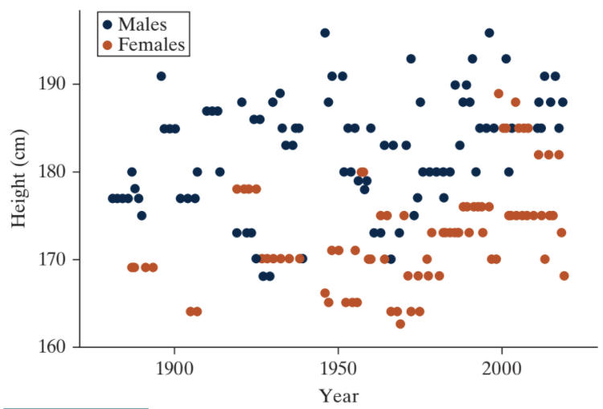

11-1 : Two quantitative variables: Scatterplot and correlation
MAT 2100: Introduction to Statistics
Grace College
Last updated September 24, 2024
The Jesus Creed
Hear, O Israel: The Lord our God, the Lord is one.
Love the Lord your God with all your heart and with all
your soul and with all your mind and with all your strength.
The second is this: Love your neighbor as yourself.
Height and winning at tennis
Step 1: Ask a research question
Based on trends observed in other sports, researchers were interested in exploring how heights of winning tennis players might be changing over time, given that height may be an advantage to winning at tennis.
Step 2: Design a study and collect data
To investigate this question, researchers gathered data on heights of the winning tennis players at Wimbledon, a prestigious tennis tournament held each year from the 1880s through 2019
Exercise 1
Identify (be specific) the observational units in this study.
Exercise 2
What is the explanatory variable? Is it categorical or quantitative?
Exercise 3
What is the response variable? Is it categorical or quantitative?
Exercise 4
In your own words, explain what it would mean for there to be an association between the explanatory and response variables in this study.
Exercise 5
Is this study an experiment or an observational study? Why?
Step 3: Explore the data
The table below represents a subset of the data values reported in the article.
Table 1:
| Year | 1881 | 1882 | 1883 | 1884 | 1885 |
| Height (cm) | 177 | 177 | 177 | 177 | 177 |
Table 2:
| Year | 2017 | 2018 | 2018 | 2019 | 2019 |
| Height (cm) | 185 | 188 | 173 | 188 | 168 |
Exercise 6
Name one possible reason some of the heights are the same for different years.
Exercise 7
Name one reason some years may have multiple heights.
Graphical summary of two quantitative variables: Scatterplots
This study is different than studies we’ve looked at before because both of the variables of interest are quantitative. For this reason, the graphical and numerical techniques we will use to summarize the data are different from those we’ve seen before.
Remark 3:
Key Idea .
A scatterplot is a graph showing a dot for each observational unit, where the location of the dot indicates the values of the observational units for both the explanatory and response variables. Typically, the explanatory variable is placed on the \(x\)-axis, and the response variable is placed on the \(y\)-axis.
Exercise 8
Paste the Wimbledon data into the Corr/Regression applet.
Which variable is on the x-(horizontal) axis? Which variable is on the y-(vertical) axis? If you want to reverse those roles, press the (Explanatory, Response) button above the data window.
Exercise 9
Create a rough sketch of the scatterplot from the applet. Be sure the axes are well labeled. Rather than drawing each dot, you could just draw an ellipse (oval) shape where most of the points lie. Show that you understand how a scatterplot is created by making a dot on the scatterplot corresponding to a Wimbledon winner in 2019 that is 188 cm tall.
When describing a scatterplot, we look for three aspects of association: direction, form, and strength. The direction of association between two quantitative variables is either positive or negative, depending on whether the response variable (size) increases as the explanatory variable (year) tends to increase (positive association) or decrease (negative association).
Exercise 10
Direction: Is the association between year and winning height positive or negative? Interpret what this means in context.
The form of association between two quantitative variables is described by indicating whether a line would do a reasonable job summarizing the overall pattern in the data or if a curve would be better. It is important to note that—especially when the sample size is small— you don’t want to let one or two points on the scatterplot change your interpretation of whether the form of association is linear. In general, assume that the form is linear unless there is compelling (strong) evidence in the scatterplot that the form is not linear.
Exercise 11
Form: Does the association between year and height appear to be linear, or is there strong evidence (over many observational units) suggesting the relationship is nonlinear?
In describing the strength of association revealed in a scatterplot, we see how closely the points follow the form; that is, how closely do the points follow a straight line or curve? If all of the points fall pretty close to this straight line or curve, we say the association is strong. Weak associations will show little pattern in the scatterplot, and moderate associations will be somewhere in the middle.
Exercise 12
Strength: In your opinion, would you say that the association between height and year appears to be strong, moderate, or weak?
It is also important to consider any unusual observations that do not follow the overall pattern.
Exercise 13
Are there any observational units (dots on the scatterplot, representing individual Wimbledon champions) that seem to fall outside of the overall pattern? If yes, identify it/them on the graph you just made. If not, provide a hypothetical example of a year and height combination that would represent an unusual observation.
Note: There are two kinds of unusual observations seen in scatterplots: influential observations and outliers. An observation is influential if removing it from the dataset dramatically changes our perception of the association. Typically influential observations are extreme in the explanatory variable. Outliers are observations that don’t follow the overall pattern of the relationship. They may or may not be influential and they may or may not be extreme in either variable individually but are unusual in terms of the combination of values.
Remark 4:
Key Idea .
Association between quantitative variables can be described with direction, form, and strength.
- If above-average values of one variable tend to correspond to above-average values of the other variable, the direction is positive. If, however, above-average values of one variable are associated with below-average values of the other, the direction is negative.
- The form of the association is whether the data follow a linear pattern or some more complicated pattern.
- The strength of an association refers to how closely the data follow a particular pattern. When an association is strong, the value of one variable can be accurately predicted from the other.
- Also look for, and investigate further, any unusual observations that do not fit the pattern of the rest.
Numerical summaries
Describing the direction, form, and strength of association based on a scatterplot, along with investigating unusual observations, is an important first step in summarizing the relationship between two quantitative variables. Another approach is to use a statistic. One of the statistics most commonly used for this purpose is the correlation coefficient.
The correlation coefficient, often denoted by the symbol r, is a single number that takes a value between -1 and 1, inclusive. Negative values of r indicate a negative association, whereas positive values of r indicate a positive association. The stronger the linear association is between the two variables, the closer the value of the correlation coefficient will be to either -1 or 1, whereas weaker linear associations will have correlation coefficient values closer to 0. Moderate linear associations will typically have correlation coefficients in the range of 0.3 to 0.7 or -0.3 to -0.7.
Exercise 14
Will the value of the correlation coefficient for the year and height data be negative or positive? Why?
Remark 5:
Key Idea .
The correlation coefficient uses a rather complex formula that is rarely computed by hand; instead, people almost always use a calculator or computer to calculate the value of the correlation coefficient. But you should be able to apply the above properties to interpret the correlation coefficient that is found.
Exercise 15
Without using the applet, give an estimated value of the correlation coefficient between year and height based on the scatterplot.
Exercise 16
Now, check the Correlation coefficient box in the applet to reveal the actual value of the correlation coefficient. Report the value.
Remark 6:
Key Idea .
The correlation coefficient is only applicable for data which has a linear form; nonlinear data are not summarized well by the correlation coefficient. In fact, we could say that the correlation coefficient is a numerical summary of the strength and direction of a linear association between two quantitative variables.
Another point about correlation is that it is sensitive to influential observations. Influential observations are unusual observations which substantially impact the value of the correlation coefficient based on whether or not they are included in the dataset.
Exercise 17
In the Add/Remove Observations section of the applet, enter a year of 2020 and height of 140 cm and press Add. Note how this is an unusual observation on the scatterplot. How did the correlation coefficient change as a result?
Exercise 18
This correlation coefficient is not particularly strong because there is a lot of scatter/variation about the regression line. Suggest another variable we haven’t considered yet that might explain some of this variability in heights, even in the same year.
Earlier, you brainstormed reasons there might be more than one winner in a given year. How can there be two winners in the same year? Although initially Wimbledon was a males-only tournament, since 1887, both a female and male winner have been crowned. (Note: A few years don’t have data due to the championship not being played that year or height data not being available on the winner.)
The figure below color codes the scatterplot depending on whether the height corresponds to the Male or Female champion that year.
Figure 7:

Exercise 19
How do the male heights tend to compare to the female heights?
Exercise 20
Does the association between height and year seem to be similar between males and females?
The figure below shows the separate scatterplot of only the female winners and only the male winners.
Figure 8:

Exercise 21
Describe the strength, form, and direction of the scatterplot for female Wimbledon champions. Are there any unusual observations?
Exercise 22
Describe the strength, form, and direction of the scatterplot for male Wimbledon champions. Are there any unusual observations?
Exercise 23
What do you predict for the value of the correlation coefficient between height and year for female winners only? Why? What do you predict for male winners?
Exercise 24
The actual correlation coefficient for females is 0.40 and for males is 0.36. Explain to a nonstatistician why the correlation coefficients are different within the male/female groups as compared to the overall correlation of 0.19 based on the pattern of dots in the scatterplot.
Note, however, that the strength of the association is not directly impacted by the size of the sample, but by how closely the observations follow the (linear) pattern.
Steps 4 and 5: Draw inferences and formulate conclusions
In a later section you will explore how to evaluate whether a correlation is statistically significant, but that’s not necessarily needed/appropriate in this case. The data here represent the entire population of Wimbledon winners (a census).
Exercise 25
How does the strength and direction of association compare between men and women? What does this tell us about the pattern of height of Wimbledon winners over time?
Exercise 26
Can we say that year causes changes in the height of the Wimbledon winners? Why or why not? Can we say that being taller makes you more likely to win Wimbledon?
Steps 6: Look back and ahead
Exercise 27
Name one additional variable you would like measured on each Wimbledon winner and explain why.
Exercise 28
Describe how you could do a similar study for another sport. What two variables would you collect? What would you expect to see? Why? What third variable could also be measured and be important to consider?